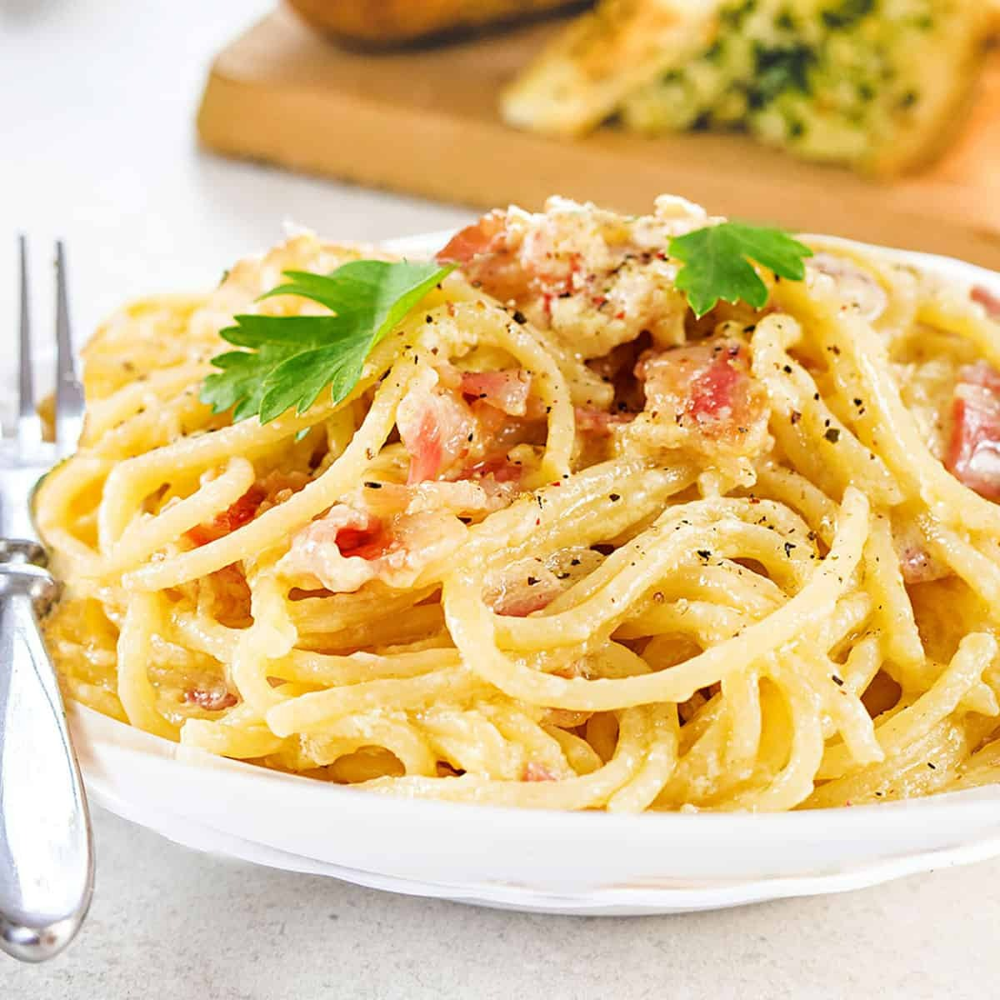

Pasta Carbonara
Italian ham pasta
Pasta carbonara is a traditional Italian pasta dish from Rome made with eggs,
hard cheese, cured pork, and pepper. It's a creamy and flavorful delight, yet
only requiring a few ingredients to create.

1 Ingredients
- 400g rigatoni pasta
- 200g diced pancetta
- 3 fresh eggs
- 1 cup grated Pecorino cheese
- Sliced garlic
- Salt and black pepper
2 Cook pasta
- boil large pot of water with salt
- cook pasta until al dente
3 Flavour Preparation
- In a bowl, beat eggs and mix with grated cheese
- Leave small amounts of cheese for garnish
- Season generously with black pepper
- Fry diced pancetta until crispy golden brown
- Add garlic to heated oil to infuse the flavour
4 Combine pasta and sauce
- Drain pasta and reserve 1 cup of pasta water
- Add pasta to sauce pan with pancetta
- Turn off head and quickly add in egg and cheese mixture
5 Serve
- Divide pasta among plates and garnish with remaining cheese
- Add extra salt and pepper if needed
- Serve while hot
Enjoy this delicious and authentic Italian classic enjoyed by many across the country!